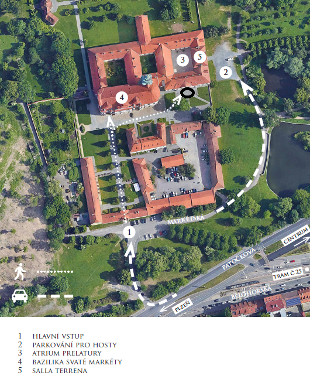
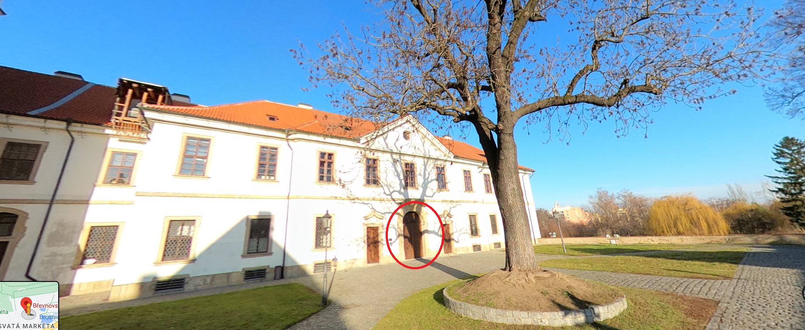

Obřad je ve čtvrtek 29. února 2024 ve 14:00 v Tereziánském sále Břevnovského kláštera. Obřad není církevní. Ve 14:00 už začíná nástup ženicha, takže prosíme, abyste zaujali místo v sále nejpozději ve 13:55. Sál je přístupný od 13:30. Plánek a fotka vstupu je níže (číslo 4 na plánku nás nezajímá, tam to není; je to v čísle 5).
 Prosím, dopravte se na místo po vlastní ose. Pokud je to jenom trochu možné, využijte tramvaj č. 22 nebo 25 na zastávku Břevnovský klášter. U Kláštera budou parkovat dodavatelé květin a hudebníci, takže parkovací kapacity budou omezené.
Neřešte příliš dresscode. Bude fajn, když vám to bude slušet. Pro pány klidně oblek, pokud se v něm cítíte dobře, ale stačí košile nebo slušnější tričko a společenské kalhoty. Pro dámy jsou v pohodě jakékoli společenské šaty, kalhotový nebo sukňový kostýmek, nebo klidně blůza se společenskými kalhotami. Je možné přijít i v černé, vůbec nám to nevadí. Nemáme stanovené žádné barvy svatby, ale pokud vás to zajímá, tak nevěsta bude v bílém a ženich v černomodrém. Opakujeme jen pro jistotu, abyste si nebraly jehlové podpatky.
Na místě bude cca od 13:00 Anička Šusová, skvělá a milá žena, která vám řekne kudy kam, kde si odložit kabáty, kde jsou záchody, a kde se usadit či postavit (bude nás hodně, takže židlí bude méně než hostů). Své mazlíčky prosím nechejte doma. Kočárky je možné nechat dole pod schody. Anička Š. je naše dobrá víla pro tento den a všechny dotazy organizačního typu směřujte na ni. Poznáte jí tak, že bude mít na ruce náramek z květin. Náramek budou mít ještě dvě naše kamarádky, které budou případně také k dispozici pro vaše dotazy. Telefon na Aničku Š., kdybyste někde bloudili, je 775266264. Aničce ani Rudolfovi prosím během svatby nevolejte, patrně nebudou mít čas moc telefonovat :-)
Potěší nás, když na nás během obřadu nebudete koukat skrz objektivy fotoaparátů či podobných zařízení a raději si náš významný okamžik s námi užijete naživo. Na místě bude fotografka, fotky pak zveřejníme na webu.
Po obřadu budou následovat gratulace ještě v Tereziánském sále, který nám je k dispozici do 15:00. Pokud to dovolí počasí, tak po gratulacích uděláme špalír v atriu prelatury (číslo 3 na plánku), kterým novomanželé projdou. V atriu se smí házet rýže, takže pokud to vyjde, dostanete rýži a bude si moci zaházet; nikde jinde a nic jiného se házet nesmí (ani foukat bublifuky).
Poté se novomanželé s nejužší rodinou (rodiče a sourozenci s partnery a dětmi, svědci) přesunou na společnou obědovečeři, ostatní svatebčané mají volno.
Zastávka tramvaje: Břevnovský klášter

Nejvíc nás potěší, když přijdete! Žádný jiný dar nám dávat nemusíte :-)
Pokud nám opravdu chcete něco dát, budeme rádi za finanční příspěvek na bankovní účet 184310459/0600 (můžete načíst QR kód bankovní appkou), popřípadě hotově na místě.
Peníze jsou dost neosobní, proto je udělejme osobnější! Zkuste nám darovat takovou částku, která vyjadřuje něco, co nějak souvisí se vztahem, který s námi máte.
Například:
A samozřejmě nám dejte například ve zprávě pro příjemce vědět, co tato částka vyjadřuje :-)
Ohledně svatby nás ideálně kontaktujte na svatebním e-mailu svatba@nikde.eu, to čteme oba. Případně pište přes Messenger či WhatsApp. Pokud radši telefonujete, můžete zavolat Aniččce na číslo 737 880 716.
Během svatby nám prosím nevolejte. Na telefonu bude Anička Šusová, 775266264.